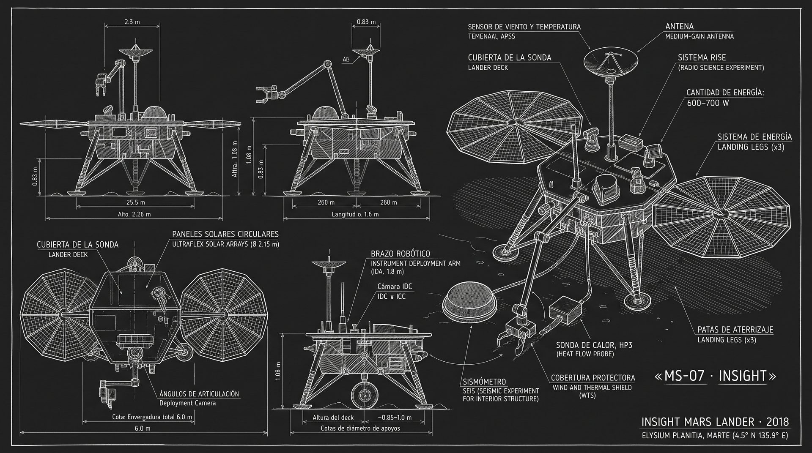

InSight

El primer sismómetro puesto en Marte. Escuchó más de 1.300 terremotos marcianos antes de apagarse por el polvo.
Retirado el 21 de diciembre de 2022 tras cuatro años de datos sísmicos. Personas: Bruce Banerdt
Lo que hizo
- Mi encargo — Fui la primera misión dedicada a mirar hacia dentro de Marte: su pulso, su temperatura y sus reflejos, como dice la NASA. Elegí el sitio por seguridad y no por su geología, porque lo interesante estaba debajo.
- El primer temblor — Bajé un sismómetro al suelo con el brazo y escuché el primer temblor registrado en otro planeta. Detecté más de 1.300 sismos, y la mayoría de los buenos venían de Cerberus Fossae.
- El interior — Con esos temblores se pudo medir lo que nadie había medido: la corteza bajo mí es más fina de lo esperado, de 25 a 40 km, y el núcleo es fundido y enorme, de unos 1.800 km de radio.
Modelo 3D, chat y cómic, en tres idiomas
Fuentes
- science.nasa.gov/mission/insight/
- science.nasa.gov/mission/insight/science/
- www.nasa.gov/missions/insight/nasa-mars-orbiter-spots-retired-insight-lander-to-study-dust-movement/
Ver el índice completo · Proyecto del NASA Space Apps Challenge 2026. Contenido con fuentes citadas.